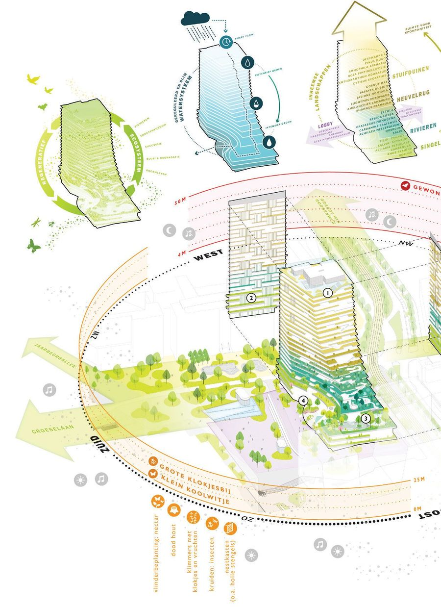
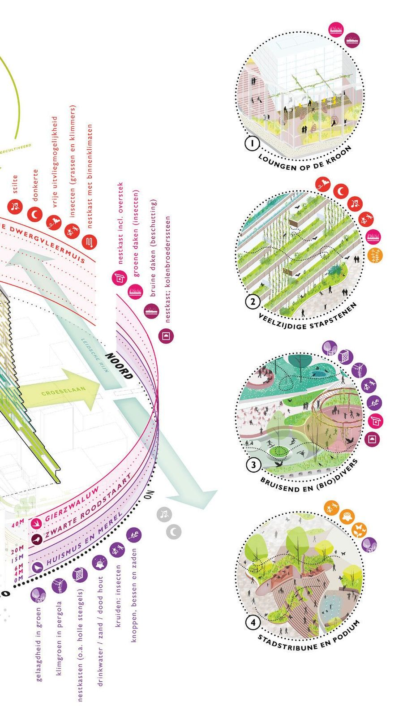

Jaarbeursplein
- Place
- Utrecht
- Year
- 2023
- Assignment
- Stedenbouw & public space
- Firm
- Buro Sant en Co
- Design
- 2023
- Status
- Tender
- Collaborations
- AM, Henning Larsen, cepezed
- Team
- Paul Plambeck, Merel Cozlijsen

A square that behaves as a park — a gradient from forest calm to plaza energy.
The Jaarbeursplein unfolds from the steps of the Forum and wraps around the Jaarbeurspleingebouw. It is a Jaarbeurspark that wears multiple faces, revealing its versatility and adaptability.

The square extends seamlessly into the lobby of the building, connecting the built environment to the landscape. That landscape forms a gradient, transitioning from the tranquillity of a park to the vibrant energy of a plaza, with inviting spaces at a human scale and a pleasant microclimate.

Set against a natural backdrop, the building and its surroundings gain a setting for a range of activities — including the unusual opportunity to play sport inside a continuous forest-like environment.
 Next projectDe KoploperDelft, 2023
Next projectDe KoploperDelft, 2023